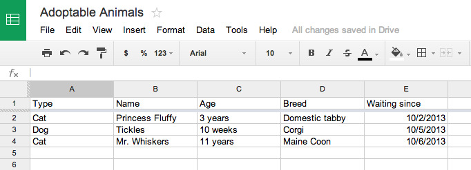

Database just big fancy spreadsheet.
Even dumb Crog could use spreadsheet.
If you've never used one before, the concept of a database is nebulous. It's easy to imagine a big, blurry blob of data without much of an understand of how data gets into it, and how and when we would want to retrieve data back out of it.
Here's the simplest description of a database I can give you: It's just a multi-page spreadsheet.
What if I asked you to pop open Google Drive and make me a spreadsheet of animals up for adoption? You would probably organize it like this:
Databases are slightly more complicated, but they work in much the same way.
Instead of spreadsheet pages, databases have tables. But an adoptable_pets table in the Humane Society's database would look very similar to the spreadsheet above.
SQL, or Structured Query Language, is a tool used to communicate with many popular database types, such as MySQL or Postgres. It's okay if you've never heard of those — the important takeaway is that SQL can be used to query, insert, modify, or delete data from many popular database types.
Don't be intimidated by SQL — it's quite repetitive, and you'll develop a knack for it quickly.
Just like a spreadsheet, databases organize information into columns and rows. Each column in a database is of a specific data type. Don't worry about memorizing all of these; you'll use some of them much more often than others.
| Data type | Category | Description | Examples |
| CHAR | text | A fixed length of 0-255 characters. | A postal code like CA, or a product code of consistent length that might be used for inventory purposes. |
| VARCHAR | text | A variable length of 0-65,535 characters, but within an expected specified range. | A name, email address, street address, or other piece of information of a length that you can estimate when designing your database. |
| TEXT | text | Up to 65,535 characters. | The description text of a product in an online store, a product review, or another message of some sort. |
| MEDIUMTEXT | text | Up to 16,777,215 characters. | An essay, blog post, or other medium piece of text. |
| LONGTEXT | text | Up to 4,294,967,295 characters. | A long essay, blog post, or other piece of text. |
| INT | number | A whole number. | 12, 34, 1028, 6. |
| FLOAT | number | A decimal value stored in 4 bytes. | Scientific data or other data in which some loss of precision is acceptable; you probably won't be working with these much while you're learning, but they do process quickly and can be valuable in large, complex calculations. |
| DOUBLE | number | A decimal value stored in 8 bytes. | Scientific data or other data in which some loss of precision is acceptable; you probably won't be working with these much while you're learning, but they do process quickly and can be valuable in large, complex calculations. |
| DECIMAL | number | An exact value used when accuracy is very important. | A dollar amount or other measurement that requires precision and accuracy in calculations. Decimal calculations are slower than float/double calculations. |
| DATE | date | The year, month, and day. | 2013-10-31 |
| DATETIME | date | The year, month, day, and time. | 2013-10-31 16:13:00 |
| TIME | date | The time without any other context. | 16:13:00 |
| YEAR | date | The year without any other information. | 2013 |
Unless you've specified otherwise in your database design, a value of NULL can also be used in any of the above columns to note an empty "cell" in your imaginary spreadsheet (also known as an empty value in your database).
SQLite (pronounced "sequel-ite") is a lightweight database engine that we're going to use for SQL practice. It's already installed on your USB key.
If an SQL command works in SQLite, it's likely to translate just fine in Postgres or MySQL (both of which are more complicated and confusing for a beginner to set up and use). But be aware that you may encounter some small syntax differences from database to database, or your query results may be returned in a different default order from database to database.
Fire up Terminal and head to your databases folder:
Don't forget that you can autocomplete paths in Terminal by hitting the Tab key.
In this folder, let's use SQLite to create a database of adoptable animals:
You should wind up at a prompt that looks like this:
This is where you will type SQL commands. Your brand-new database awaits your instructions.
You get sick of database's stupid face, type ".exit".
You miss database and want visit, type "sqlite3 databasename.db".
At the moment, your database is blank. If we're going to have any fun, we need to add a table (the equivalent of a spreadsheet page) to the database.
Note that you don't have to type sqlite> where it appears -- we're just showing you the prompt you should already see on the screen.
We've created a table named Adoptables. The lengths we chose for our varchar fields are pretty arbitrary; we're just guessing at what the maximum length might be. If users reported a lot of trouble, we could give them more characters to work with by changing the data type later.
We've specified NOT NULL anytime we wanted the database to require a value. You've probably seen a representation of this data design anytime you've had to fill out a required field on a form.
Let's see if there are any animals listed in our table:
Hmm, nope. Not yet. Let's add one.
Have you noticed that SQL doesn't really care about line breaks? SQL just waits for the semicolon with "...>", which is SQL's way of saying "Go on ... ?" If you can't get a query to run, make sure you haven't forgotten the semicolon.
Now let's see whether our Adoptables table has anything in it:
You should see our canine pal Seamus listed:
Most excellent! Use your new SQL knowledge to insert at least five more dogs and cats of your choosing.
When it comes to viewing table data, you have quite a few querying options. Try these out.
You can just ask for everything in a table:
... a certain field in a table:
... multiple fields in the table:
... animals meeting some criteria:
... just certain fields of animals meeting some criteria:
... animals meeting multiple criteria:
... animals meeting one criteria or another:
... animals with names that start or end with certain letters (with % used as wildcard):
It's also possible to use >, <, IS NULL, IS NOT NULL, and so on. If you want to make a specific SQL query and aren't sure how, Google is your friend!
Let's try a little experiment. What if yet another wonderful Labrador mix named Seamus shows up at the animal shelter?
You're going to have to add him to your database, even though another dog with his attributes already exists. Will it work?
The database doesn't seem to mind having two exact rows. That's because a hidden value in SQLite, the ROWID, is still unique for each dog. Take a look:
You'll see that each dog has his own ID number, even if it's not normally displayed to you. In this case, the ROWID is what we're using to uniquely identify each dog. That ID doesn't change, even if some animals are deleted from the system and the ROWIDs are no longer contiguous.
Sometimes, using an autoincrementing row ID is a perfectly fine way to identify a particular item in a database. Machines keep track of numbers quite nicely, so even if you write the exact same tweet twice, Twitter will always be able to tell the difference between tweet 1928 and tweet 903.
Humans have quite a bit more trouble, though. The animal shelter could note each animal's ID number somewhere in the animal's paperwork, but it might be easier to use a different primary key, such as the animal's name. If the shelter is relatively small, it wouldn't be too difficult for employees to give each stray a unique name when the animal arrives.
Similarly, some companies might use each customer's email address as a primary key, because email addresses are unique. Most of the time, though, because machines are doing the work anyway, ROWID or the database equivalent is used.
We haven't entered much data, and updating a table can be a little complicated, so let's just delete our table and start over. We need the practice anyway!
Note that this time, we've told our database to use Name as our primary key.
Now let's insert a cat, Fluffy, into the table:
What happens if you try to do this a second time? You should see an error. Two cats named 'Fluffy' cannot exist in this table, because Name is our primary key, and primary keys must be unique.
Time to practice inserting more rows: add a few more animals. Be sure to give them unique names!